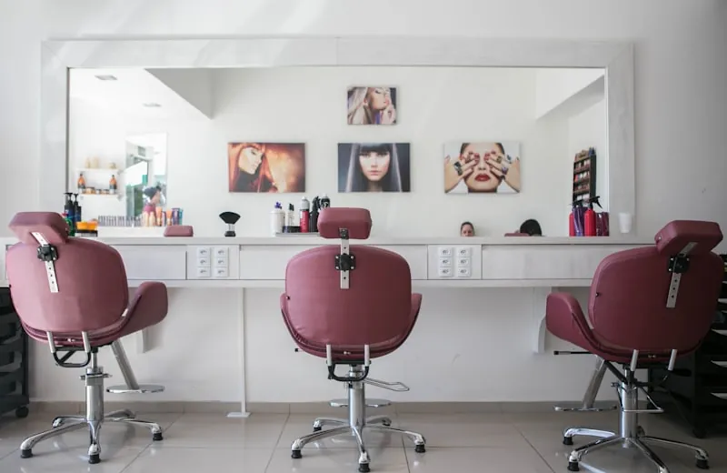
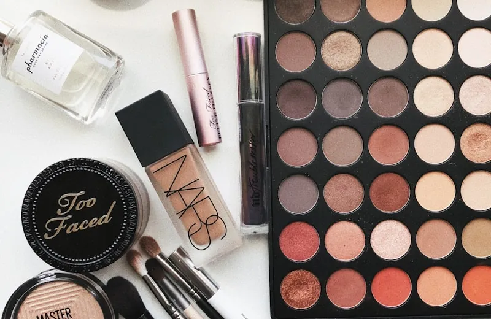
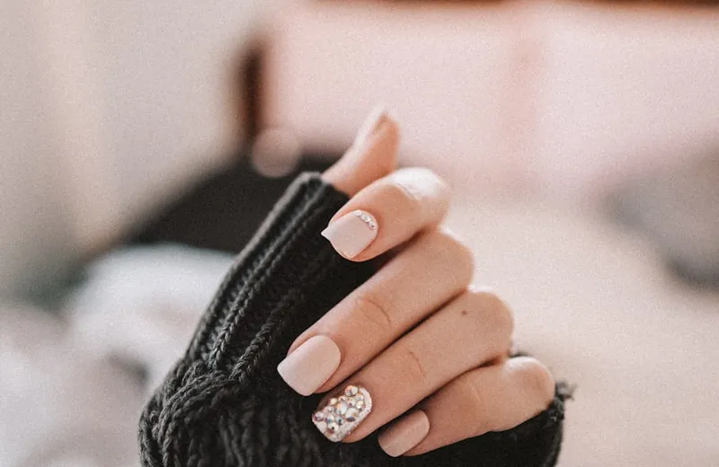
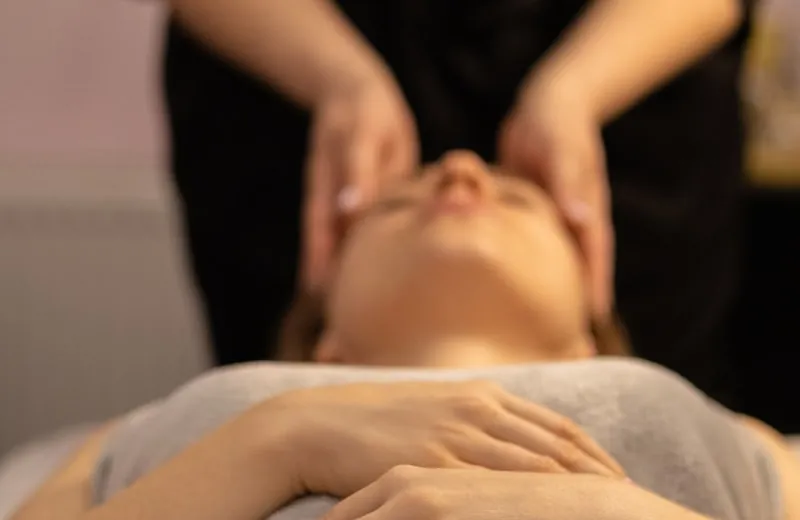
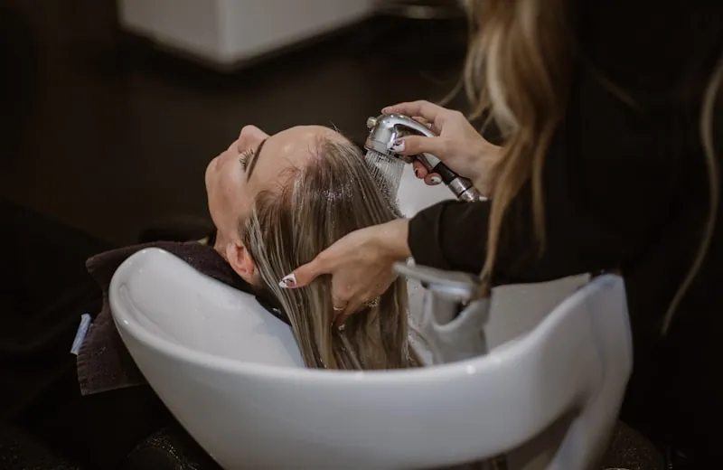
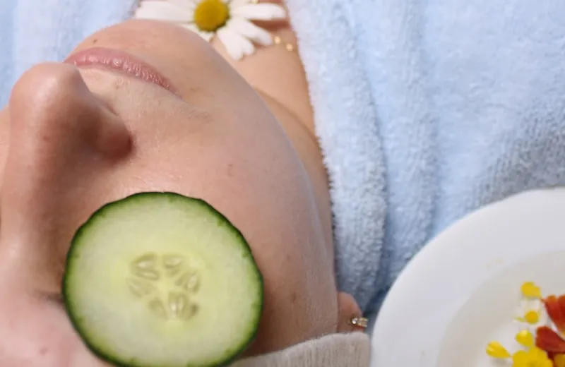

Blog
Z gabinetu
Praktyczna wiedza o pielęgnacji, bez marketingowych obietnic.
-

Skóra zimą: dlaczego krem z lata przestaje działać
Niższa wilgotność i ogrzewanie zmieniają potrzeby cery. Co realnie warto zmienić w rutynie.
Czytaj więcej -

Hybryda a żel: który manicure wybrać i kiedy
Trwałość, regeneracja płytki, koszt w skali roku. Porównanie bez wciskania droższej opcji.
Czytaj więcej -

Pierwsze 14 dni po makijażu permanentnym brwi
Co jest normą, a co sygnałem do kontaktu z gabinetem. Dzień po dniu.
Czytaj więcej -

Kwasy w domu czy w gabinecie? Gdzie jest granica
Które stężenia są bezpieczne na własną rękę, a kiedy lepiej oddać skórę specjaliście.
Czytaj więcej -

Jak dbać o rzęsy po przedłużaniu, żeby trzymały dłużej
Mycie, czesanie, czego unikać. Kilka nawyków, które przedłużają efekt o tygodnie.
Czytaj więcej -

Masaż Kobido: co realnie daje, a czego nie obiecujemy
Napięcie, owal twarzy, relaks. Co potwierdza praktyka, a co jest marketingiem.
Czytaj więcej
Masz pytanie o pielęgnację?
Napisz do nas. Odpowiemy konkretnie, bez wciskania zabiegów na siłę.
Napisz do nas